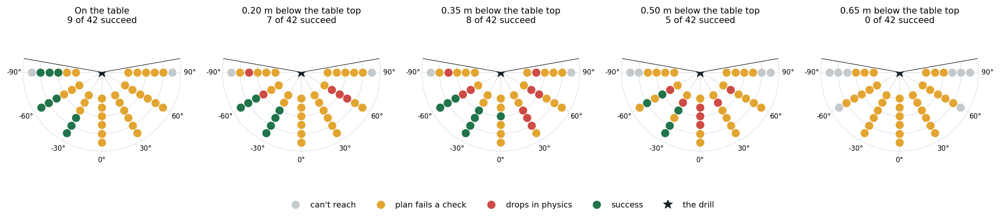

My mentor asked me to fix the arm's position. I searched for one fixed mount that works, first for my drill and then for 14 of NVIDIA's released pickups, and fixed the approach and the grasps along the way. One mount on the table picks up 9 of the 14 objects in physics.
Pipeline 2, week 2
Where to mount the arm
My mentor asked me to fix the arm's position. I started with the free option: keep the human videos and find one fixed mount that works. I tested it first on my drill, then on 14 of NVIDIA's released tabletop pickups. Every result below is from the Isaac Lab physics check.
Step F7
Mount sweep for the drill
I tried 210 fixed mounts around the drill: 7 angles, 6 distances and 5 heights. For each one the arm is planned and then replayed with physics. Angles are measured around the drill; 0° is straight behind the direction the kid's hand came from.
Mounts tried
210 (−90° to 90°, 0.3–0.8 m away, 0–0.65 m below the table top)
First try
19 succeed, 1 on the table
After F8
29 succeed, 9 on the table
Best side
−30° to −60°, 0.5–0.8 m away

Every mount tried for the drill, after the F8 fixes. Rings are 0.3, 0.5 and 0.7 m from the drill.
Step F8
A safer approach
The first sweep showed three problems. The human moves faster than the Panda's joints allow. On the table, the wrist swung through the drill on its way to the grasp and knocked it over. And people often slide an object a few centimeters before lifting it, so the gripper closed where the object had already left.
Approach
hover 15 cm above the grasp, then straight down and in
Collision check
arm against the object's mesh on every frame before the grasp
Speed
human motion played 2× slower
Grasp timing
close before the object first moves, not before it lifts
Low objects
grasp from straight above when the palm would hit the table
What I learned: before the collision check, the wrist pushed the drill 7.8 cm before the gripper even closed.
Step F9
NVIDIA's released pickups
I downloaded 20 of NVIDIA's reconstructed tabletop pickups and turned them into Franka inputs. Each one was tested at the 5 most promising mounts from the drill sweep. Copying the person's whole motion worked for only 3 objects. The arm always failed while holding the object: after lifting, people carry objects far and turn them a lot, and a fixed arm cannot follow.
Motions
20; 5 objects too wide for the 8 cm gripper where the person held them, 1 picked up left-handed
Tested
14 objects × 5 mounts
Copy the full motion
3 of 14 objects
Human motion after lifting
raised 21–78 cm, turned up to 179° (rolling pin)
Step F10
Grasp and lift
For a pickup task the robot only has to grasp the object and lift it. So the Franka now copies where and when the person grasped, then lifts the object 20 cm straight up over 2 seconds and holds it still. The joint-speed failures went from 36 to 7, and 5 of the 14 objects succeed.
Still open: the remaining objects mostly slip out of the fingers. This option (A) and two others are for my mentor to decide: follow the person's path with looser rotation (B), or keep copying everything and use only slow, small human motions (C).
Step F11
Grasps near the center of mass
Every released object weighs 1 kg in simulation. Held far from its center of mass, an object swings around the line between the two finger pads and slips out. The planner now measures that lever and prefers grasps within 3 cm of the center of mass. It also adds a grasp from straight above through the center of mass.
Objects picked up
9 of 14
Best mount
on the table, −30°, 0.7 m: works for all 9
Other mounts
on the table at −60°: 7 · 0.2 m below: 6 · the two 0.35 m below: 3 each
Lift in the clip
banana 19.3, cereal 18.9, rolling pin 19.2 of 20 cm
What I learned: the cereal box mesh has only 8 corner points, so the planner saw nothing in the middle of its faces. It now also uses 20,000 points sampled over each surface. I also tried a constant 70 N squeeze like the real gripper, but it popped round objects out of the fingers, so I kept Isaac Lab's finger control.
The three objects this step rescued, at the best mount: banana, cereal box and rolling pin, each grasped through its center of mass and lifted 20 cm.
Results
14 objects, 5 mounts each
Number of mounts, out of 5, where the Franka lifts the object in physics.
Object
Copy full motion
Grasp and lift (F10)
Center-of-mass grasps (F11)
Notes
milk
5 / 5
5 / 5
5 / 5
works at every mount
spray bottle
0 / 5
5 / 5
5 / 5
wine bottle
4 / 5
4 / 5
4 / 5
banana
0 / 5
0 / 5
3 / 5
grasped at its center of mass
cereal box
0 / 5
0 / 5
3 / 5
grasped at its center of mass
rolling pin
0 / 5
0 / 5
3 / 5
grasped at its center of mass
ketchup
2 / 5
2 / 5
2 / 5
slips at the lower mounts
water bottle
0 / 5
1 / 5
2 / 5
needs 7–8 cm of the 8 cm opening
teapot
0 / 5
0 / 5
1 / 5
handle is 4.4 cm off the center of mass
kettle
0 / 5
0 / 5
0 / 5
handle slips: rises 15–16 of 20 cm
pan
0 / 5
0 / 5
0 / 5
no grasp the open gripper fits without hitting the pan or table
canned food
0 / 5
0 / 5
0 / 5
no grasp the open gripper fits without hitting the can or table
bowl
0 / 5
0 / 5
0 / 5
too wide for the gripper
coffee cup
0 / 5
0 / 5
0 / 5
too wide for the gripper
Objects picked up
3 of 14
5 of 14
9 of 14
Also in week 2
What I looked into
How GRAIL handles the object
GRAIL never rebuilds the object from the video. It starts from a known 3D model, places it in the Blender scene, and hands the same model to FoundationPose. FoundationPose starts from the pose Blender used and only tracks the object from frame to frame. So a better object model has to come from the asset step, not from the video.
Object model
ComAsset or RoboCasa, or text → image → Hunyuan3D-2.1
Order
body and hands → masks and depth → FoundationPose → joint optimization → filters
FoundationPose
given the mesh and Blender's starting pose; tracking only
Other ways to fix the arm's position
Prompting a Franka straight into the generated video needs a video model trained on robot footage, such as DROID or Cosmos. There is little such data, and the generated arm is hard to match to a real Franka, so I started with the free option above. For trying other video models, I priced the main ones.
Model
Price
One 5 s clip
100 clips
Kling 2.5 Turbo Pro
$0.07 / s
$0.35
$35
Kling 3.0 Pro
$0.112 / s
$0.56
$56
Veo 3.1 Lite / Fast / Standard (8 s max)
$0.05 / $0.10 / $0.40 per s
$0.25 / $0.50 / $2.00
$25 / $50 / $200
Wan 2.6, 720p
$0.10 / s
$0.50
$50
Hailuo-H3
$0.13 / s
$0.65
$65
Seedance 2.0, 720p (priced by tokens: width × height × fps × seconds / 1024, at $7 per million)
108k tokens per 5 s
$0.76
$76
Prices checked in October 2026. Sora 2's API shut down on 24 Sep 2026. Wan 2.2 on my own GPU stays free, at about 18 minutes per clip.
Along the way
Problems I hit and fixed this week
Where
Problem
Fix
F8
On the table, the wrist knocked the drill over before the grasp: the move to the pre-grasp pose was never collision-checked.
Hover above the grasp first, and check the arm against the object on every frame before the grasp.
F8
People slide objects 5–13 cm before lifting them, so the gripper closed on air.
Close the gripper before the object first moves.
F8
On low, flat objects the wide palm dipped into the table.
A grasp from straight above as a fallback.
F11
Low-poly meshes (the cereal box has 8 corner points) left the grasp planner nothing to measure mid-face.
Plan grasps on 20,000 points sampled over the surface.
Results
Outputs written inside Docker are owned by root, so a rerun could silently keep old results.